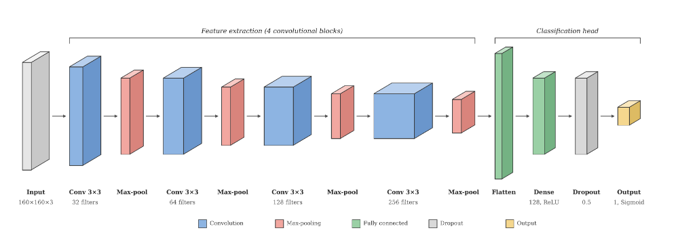

Kardiomegali adalah pembesaran jantung yang abnormal yang menandakan patologi kardiovaskular berat, sehingga deteksi radiografik yang tepat waktu sangat penting untuk mencegah gagal jantung. Namun, penilaian manual konvensional sangat bergantung pada keahlian radiolog dan estimasi visual terhadap rasio kardiotoraks, yang menyebabkan inkonsistensi diagnostik dan kelelahan interpretasi dalam triase klinis yang terbebani. Untuk menjawab tantangan diagnostik ini, sistem Computer-Aided Diagnosis (CADx) otomatis yang memanfaatkan deep convolutional neural network menawarkan deteksi yang objektif, dapat direproduksi, dan instan dari radiograf dada. Penelitian ini melakukan analisis perbandingan empiris secara langsung antara transfer learning melalui MobileNetV2 yang di-fine-tune dan Custom CNN spesifik domain yang dilatih dari nol, di bawah kondisi prapemrosesan dan evaluasi yang identik. Dataset eksperimen terdiri dari 5,552 radiograf dada posteroanterior (PA) dan anteroposterior (AP) yang seimbang (2,776 kardiomegali dan 2,776 normal) yang dibagi menjadi 4,438 sampel pelatihan dan 1,114 sampel pengujian independen. Kedua arsitektur dilatih dengan normalisasi piksel, augmentasi ringan, resampling spasial nearest-neighbor, dan optimasi Adam dengan early stopping. Hasil eksperimen pada 1,114 citra uji hold-out menunjukkan bahwa Custom CNN secara konsisten mengungguli MobileNetV2 yang di-fine-tune pada seluruh metrik evaluasi kuantitatif. Custom CNN mencapai akurasi keseluruhan sebesar 75.49% dibandingkan 70.20% untuk MobileNetV2, yang mencerminkan keunggulan 5.29 poin persentase. Pada analisis receiver operating characteristic, Custom CNN menghasilkan Area Under the Curve (ROC-AUC) sebesar 0.8350, melampaui Area Under the Curve MobileNetV2 sebesar 0.7867. Selain itu, Custom CNN mencapai presisi (74.15% vs. 68.23%), recall (78.28% vs. 75.58%), dan skor F1 (76.16% vs. 71.72%) yang lebih unggul. Yang terpenting, Custom CNN menekan kasus patologis yang terlewat menjadi 121 false negative dibandingkan 136 pada MobileNetV2, sekaligus mengurangi alarm palsu dari 196 menjadi 152 false positive. Temuan ini menunjukkan bahwa transfer learning dari citra alami tidak serta-merta melampaui CNN yang disesuaikan dengan domain untuk radiografi toraks, sehingga menegaskan efektivitas arsitektur yang dirancang khusus untuk skrining jantung otomatis.
Kardiomegali adalah kondisi kardiovaskular yang ditandai dengan pembesaran patologis abnormal pada siluet jantung relatif terhadap rongga toraks. Kondisi ini menjadi indikator klinis utama dari gangguan kardiovaskular yang mendasarinya, termasuk gagal jantung kongestif, kardiomiopati, efusi perikardial, penyakit katup, dan hipertensi sistemik kronis [1, 2]. Radiografi dada (Chest X-Ray) diadopsi secara universal sebagai modalitas pencitraan non-invasif utama untuk skrining toraks awal karena biaya akuisisinya yang rendah, dosis radiasi yang minimal, dan ketersediaannya yang luas di instalasi gawat darurat dan fasilitas rawat jalan [3, 4].
Dalam praktik radiologi standar, kardiomegali didiagnosis secara kuantitatif dengan menghitung Cardiothoracic Ratio (CTR) pada radiograf dada posteroanterior (PA) standar [3]. CTR dirumuskan sebagai diameter transversal maksimum siluet jantung dibagi diameter internal transversal maksimum rongga toraks. Nilai CTR yang melebihi 0.50 (50%) secara klinis dikenali sebagai indikasi kardiomegali [2, 5]. Namun, pengukuran CTR secara manual dan inspeksi visual menghadapi tantangan klinis yang besar. Prosesnya padat karya, subjektif, dan rentan terhadap variabilitas antar-pengamat maupun intra-pengamat [6, 7]. Di instalasi gawat darurat dan pusat layanan kesehatan primer, di mana radiolog toraks bersertifikat langka, keterlambatan diagnosis atau salah interpretasi dapat mengakibatkan diagnosis yang terlewat (false negative), yang memicu gagal jantung dekompensasi berat yang mengancam jiwa [8]. Sebaliknya, klasifikasi false positive memicu ekokardiogram yang tidak perlu, rawat inap yang berkepanjangan, dan kecemasan pasien [4].
Kemajuan terkini dalam deep learning dan computer vision telah membuka peluang transformatif bagi pencitraan medis melalui sistem Computer-Aided Diagnosis (CADx) otomatis [8, 9]. Deep Convolutional Neural Network (CNN) mampu mengekstraksi representasi fitur spasial hierarkis secara otomatis langsung dari larik piksel radiografik mentah tanpa memerlukan rekayasa fitur manual [10, 11]. Terlepas dari keberhasilan tersebut, pengembangan pengklasifikasi citra medis berkinerja tinggi masih terhambat oleh langkanya dataset medis beranotasi berskala besar, regulasi privasi, dan mahalnya anotasi oleh spesialis [12, 13].
Untuk mengatasi kelangkaan data medis, transfer learning telah menjadi paradigma dominan dalam penelitian deep learning [9, 14]. Transfer learning menggunakan kembali backbone ekstraksi fitur yang telah dilatih sebelumnya pada dataset citra alami berskala besar, terutama ImageNet [15]. MobileNetV2 adalah arsitektur pra-latih ringan yang menonjol dan banyak digunakan dalam aplikasi kesehatan karena efisiensi komputasinya, blok residual terbalik (inverted residual), dan bottleneck linear, sehingga cocok untuk perangkat medis edge [16]. Namun, premis dasar bahwa transfer learning secara universal mengungguli jaringan khusus yang dilatih dari nol baru-baru ini dipertanyakan [17, 18]. Radiograf medis adalah citra transmisi monokromatik dengan rentang dinamis tinggi yang diatur oleh atenuasi foton, dan menunjukkan distribusi struktural serta semantik yang sangat berbeda dibandingkan citra alami fotografis (citra RGB tiga kanal berupa objek, hewan, dan lanskap) [17, 19].
Divergensi domain yang mendasar ini memunculkan pertanyaan penelitian yang krusial: Apakah arsitektur transfer learning pra-latih seperti MobileNetV2 benar-benar mengungguli Custom CNN yang dirancang khusus dari nol untuk geometri radiograf toraks? Meskipun berbagai studi telah mengevaluasi model transfer learning secara terpisah [7, 20], perbandingan empiris langsung yang ketat antara MobileNetV2 yang di-fine-tune dan convolutional neural network kustom di bawah protokol prapemrosesan, augmentasi, dan pembagian data yang benar-benar identik masih jarang ditemukan.
Penelitian ini mengisi kesenjangan tersebut dengan menyajikan investigasi perbandingan empiris antara dua model deep learning untuk klasifikasi biner kardiomegali dari radiograf dada: model transfer learning berbasis MobileNetV2 yang di-fine-tune dan Custom CNN spesifik domain dengan arsitektur konvolusional progresif 4 blok. Kedua jaringan dikembangkan, dilatih, dan dievaluasi pada dataset seimbang yang identik berisi 5,552 citra sinar-X dada. Kontribusi utama penelitian ini adalah:
Sisa naskah ini disusun sebagai berikut: Bagian 2 menguraikan metodologi penelitian, karakteristik dataset, langkah prapemrosesan, arsitektur model deep learning, dan formulasi matematis evaluasi. Bagian 3 menyajikan hasil eksperimen, analisis confusion matrix, perbandingan ROC-AUC, rincian kesalahan, dan pembahasan klinis. Bagian 4 menyimpulkan penelitian dan menguraikan arah penelitian selanjutnya.
Penelitian ini mengikuti metodologi eksperimental kuantitatif yang terdiri dari lima tahap sistematis: akuisisi data, prapemrosesan dan augmentasi citra medis, perancangan arsitektur jaringan, pelatihan model dengan early stopping, dan evaluasi statistik perbandingan. Gambar 1 mengilustrasikan alur kerja penelitian menyeluruh yang digunakan dalam studi ini.
Repositori citra eksperimen dikumpulkan dari benchmark pencitraan biomedis publik Kaggle (“Cardiomegaly Disease Prediction using Chest X-Ray”). Dataset ini terdiri dari total 5,552 radiograf dada terverifikasi dalam proyeksi anterior-posterior (AP) dan posterior-anterior (PA). Untuk mencegah bias ketidakseimbangan kelas—yang sering mendistorsi perilaku pengklasifikasi ke arah kelas mayoritas tanpa mencerminkan kemampuan diagnostik yang sebenarnya [4, 12]—dataset dikurasi dengan keseimbangan kelas 50:50 yang tepat: 2,776 citra yang menunjukkan kardiomegali dan 2,776 citra kontrol normal tanpa pembesaran jantung.
Dataset dibagi menjadi set pelatihan 80% (4,438 citra) dan set pengujian hold-out 20% (1,114 citra) menggunakan stratified sampling untuk mempertahankan distribusi kelas yang identik pada kedua bagian. Seperti dirangkum pada Tabel 1, set uji terdiri dari 557 kasus kardiomegali terkonfirmasi dan 557 kasus normal. Set uji dikarantina secara ketat selama perancangan model dan digunakan secara eksklusif untuk pelacakan validation loss selama early stopping serta verifikasi kinerja akhir yang tidak bias.
| Kelas Diagnostik | Set Pelatihan (80%) | Set Pengujian (20%) | Total Sampel | Proporsi Kelas |
|---|---|---|---|---|
| Kardiomegali | 2,219 | 557 | 2,776 | 50.0% |
| Normal | 2,219 | 557 | 2,776 | 50.0% |
| Total | 4,438 | 1,114 | 5,552 | 100.0% |
Sebelum dimasukkan ke jaringan saraf, seluruh citra radiografik menjalani prapemrosesan yang seragam. Radiograf dada yang semula diakuisisi dengan beragam resolusi distandarkan menjadi 160 × 160 piksel dengan tiga kanal (format RGB) agar sesuai dengan kebutuhan tensor input. Nilai intensitas piksel mentah dalam domain bilangan bulat 8-bit [0, 255] dinormalisasi menjadi nilai floating-point kontinu pada rentang [0.0, 1.0] dengan membaginya dengan faktor 255.0, seperti dinyatakan pada (1):
dengan Iraw(x, y) menyatakan intensitas piksel 8-bit mentah pada koordinat (x, y), dan Inorm(x, y) merepresentasikan nilai skalar yang telah dinormalisasi. Normalisasi menstandarkan propagasi gradien selama backpropagation dan mencegah vanishing atau exploding gradient [18].
Temuan teknis penting yang ditemukan selama validasi rekayasa berkaitan dengan metode resampling citra. Pipeline computer vision standar sering menggunakan interpolasi bicubic untuk downsampling. Namun, pada radiograf medis beresolusi rendah hingga menengah, interpolasi bicubic melakukan penghalusan berbobot sub-piksel (anti-aliasing) pada transisi batas yang tajam. Hal ini menghasilkan pengaburan artifisial di sekitar kontur jantung bagian tepi, yang disalahartikan oleh filter konvolusional sebagai siluet jantung yang membesar (CTR > 0.50), sehingga radiograf yang sehat salah didiagnosis sebagai kardiomegali (false positive). Untuk menjaga ketajaman batas anatomi yang autentik, resampling nearest-neighbor diterapkan secara ketat pada seluruh data generator, yang berhasil menghilangkan distorsi batas akibat resampling.
Untuk meningkatkan generalisasi model dan mensimulasikan variasi posisi pasien saat pemaparan sinar-X, augmentasi data real-time diterapkan pada set pelatihan menggunakan ImageDataGenerator: rotasi acak ringan dalam ±5 derajat, zoom acak dalam 5% (faktor 0.05), dan pembalikan horizontal acak [22]. Partisi pengujian tetap sepenuhnya tanpa augmentasi dan tidak diacak untuk menjaga objektivitas evaluasi klinis.
Penelitian ini membandingkan dua paradigma deep learning yang secara fundamental berbeda: transfer learning menggunakan MobileNetV2 yang di-fine-tune dan Custom CNN yang dibangun khusus dan dilatih dari nol.
1) MobileNetV2 (Transfer Learning dengan Fine-Tuning): MobileNetV2 dipilih sebagai benchmark transfer learning ringan yang mutakhir [16]. Arsitektur model ini berlandaskan blok residual terbalik dengan bottleneck linear, yang memperluas dimensi fitur secara internal untuk menangkap representasi manifold yang ekspresif sebelum memproyeksikannya ke ruang bottleneck berdimensi lebih rendah menggunakan konvolusi depthwise separable. Ekstraktor fitur dilatih sebelumnya pada dataset ImageNet berisi 1.4 juta citra [15]. Untuk mengadaptasi representasi citra alami ke radiografi toraks, jaringan di-fine-tune: 125 lapisan awal dibekukan untuk mempertahankan filter tepi dan tekstur tingkat rendah yang bersifat umum, sedangkan 30 lapisan konvolusional terakhir diatur agar dapat dilatih (tidak dibekukan). Head klasifikasi ImageNet yang asli diganti dengan head klasifikasi khusus tugas yang terdiri dari lapisan Global Average Pooling 2D, lapisan Dense fully connected dengan 128 neuron dan aktivasi Rectified Linear Unit (ReLU), lapisan Dropout dengan laju 0.50 untuk menekan ko-adaptasi, dan satu neuron sigmoid untuk keluaran probabilitas biner. MobileNetV2 memiliki total 2,422,081 parameter, di mana 1,163,649 di antaranya dapat dilatih.
2) Custom CNN (Dilatih dari Nol): Custom CNN dirancang khusus untuk radiograf toraks skala abu-abu, dengan mengutamakan ekstraksi fitur hierarkis progresif yang disesuaikan dengan geometri siluet jantung dan batas toraks. Arsitekturnya terdiri dari empat blok konvolusional berurutan. Setiap blok menggunakan kernel konvolusi 3 × 3 dengan stride 1, padding valid, dan aktivasi ReLU, diikuti langsung oleh Max-Pooling 2 × 2 dengan stride 2 untuk mencapai invariansi spasial dan memperkecil peta fitur menjadi setengahnya. Jumlah filter meningkat secara progresif pada keempat blok: 32 filter pada Blok 1, 64 pada Blok 2, 128 pada Blok 3, dan 256 pada Blok 4. Sebanyak 256 peta fitur keluaran Blok 4 (dimensi 8 × 8 × 256) diratakan menjadi vektor berdimensi 16,384, diikuti oleh lapisan dense fully connected berisi 128 neuron (aktivasi ReLU), lapisan regularisasi dropout (laju 0.50), dan satu neuron sigmoid yang mengeluarkan probabilitas kardiomegali. Custom CNN memiliki 2,485,825 parameter, seluruhnya (100%) dapat dilatih dari nol.
Rancangan visual arsitektur layer, dimensi tensor keluaran, serta progresivitas alur dari ekstraksi fitur hingga klasifikasi untuk model Custom CNN 4-blok diilustrasikan secara rinci pada Gambar 2, sedangkan perbandingan struktural komprehensif antara kedua model dirangkum pada Tabel 2.

| Atribut Struktural | MobileNetV2 (Fine-Tuned) | Custom CNN (Dari Nol) |
|---|---|---|
| Dimensi Input | 160 × 160 × 3 | 160 × 160 × 3 |
| Bobot Pra-latih | ImageNet (ILSVRC) | Tidak Ada (Inisialisasi Acak) |
| Backbone Ekstraksi Fitur | Residual Terbalik + Bottleneck Linear | 4 Blok Konv (32, 64, 128, 256 filter) |
| Ukuran Kernel Konvolusi | 3 × 3 Depthwise Separable | 3 × 3 Konvolusi 2D Standar |
| Reduksi Peta Fitur | Global Average Pooling 2D | Lapisan Flatten (16,384 unit) |
| Unit Tersembunyi Dense | 128 neuron, ReLU | 128 neuron, ReLU |
| Regularisasi Dropout | Laju 0.50 | Laju 0.50 |
| Aktivasi Output | Sigmoid (1 neuron) | Sigmoid (1 neuron) |
| Total Parameter | 2,422,081 | 2,485,825 |
| Parameter yang Dapat Dilatih | 1,163,649 (30 lapisan terakhir) | 2,485,825 (100% dapat dilatih) |
| Parameter yang Tidak Dapat Dilatih | 1,258,432 (lapisan awal dibekukan) | 0 |
Kedua model dilatih menggunakan mini-batch gradient descent dengan optimizer Adam dan loss Binary Cross-Entropy [18]. Fungsi loss Binary Cross-Entropy L didefinisikan secara matematis pada (2):
dengan N menyatakan jumlah sampel dalam batch, yi ∈ {0, 1} merepresentasikan label biner ground-truth yang sebenarnya (0 untuk Normal, 1 untuk Kardiomegali), dan ŷi ∈ [0, 1] merepresentasikan probabilitas prediksi model.
Hiperparameter pelatihan dikalibrasi melalui eksperimen sistematis. Ukuran batch ditetapkan 16, dan anggaran pelatihan maksimum ditetapkan 15 epoch. Callback EarlyStopping memantau validation loss pada set uji hold-out dengan parameter patience 4 epoch dan restore_best_weights=True, mencegah overfitting dan menghentikan eksekusi begitu validation loss mencapai plateau. Untuk Custom CNN, learning rate awal η = 1 × 10−4 (0.0001) digunakan. Untuk fine-tuning MobileNetV2, learning rate dikalibrasi menjadi η = 1 × 10−5 (0.00001)—satu orde besaran lebih kecil—untuk mencegah catastrophic forgetting dan menjaga stabilitas fitur pra-latih selama backpropagation melalui lapisan residual yang tidak dibekukan [9, 14]. Tabel 3 merinci konfigurasi hiperparameter pelatihan.
| Hiperparameter | MobileNetV2 (Fine-Tuned) | Custom CNN (Dari Nol) |
|---|---|---|
| Epoch Maksimum | 15 | 15 |
| Ukuran Batch | 16 | 16 |
| Optimizer | Adam | Adam |
| Learning Rate (η) | 1 × 10−5 (0.00001) | 1 × 10−4 (0.0001) |
| Fungsi Loss | Binary Cross-Entropy | Binary Cross-Entropy |
| Pemantauan Early Stopping | Validation Loss (val_loss) | Validation Loss (val_loss) |
| Patience Early Stopping | 4 epoch | 4 epoch |
| Pemulihan Bobot | Bobot Terbaik Dipulihkan | Bobot Terbaik Dipulihkan |
Untuk mengevaluasi efikasi diagnostik secara menyeluruh, kedua model dinilai menggunakan lima metrik statistik yang diturunkan dari confusion matrix pada 1,114 sampel uji hold-out. Kardiomegali ditetapkan sebagai kelas positif, dan Normal ditetapkan sebagai kelas negatif. Komponen confusion matrix didefinisikan sebagai berikut:
Metrik statistik dihitung menurut persamaan (3), (4), (5), dan (6):
Selain itu, kurva Receiver Operating Characteristic (ROC) dan Area Under the Curve (ROC-AUC) dihasilkan. ROC-AUC mengevaluasi kemampuan diskriminatif model pada seluruh ambang klasifikasi yang mungkin dengan memplot True Positive Rate terhadap False Positive Rate, sehingga memberikan ukuran keandalan diagnostik yang tidak bergantung pada ambang [1, 7].
Bagian ini menyajikan evaluasi empiris perbandingan antara MobileNetV2 dan Custom CNN pada set uji independen berisi 1,114 radiograf dada (557 kardiomegali dan 557 normal). Analisis mencakup metrik klasifikasi keseluruhan, distribusi confusion matrix, karakteristik ROC-AUC, dan implikasi klinis dari kesalahan diagnostik.
Tabel 4 merangkum kinerja kuantitatif keseluruhan dari kedua model deep learning. Temuan empiris menunjukkan bahwa Custom CNN yang dilatih dari nol secara konsisten melampaui MobileNetV2 yang di-fine-tune pada setiap metrik statistik yang dievaluasi.
| Metrik Evaluasi | MobileNetV2 (Fine-Tuned) | Custom CNN (Dari Nol) | Selisih Absolut | Persentase Peningkatan |
|---|---|---|---|---|
| Akurasi | 70.20% (782 / 1,114) | 75.49% (841 / 1,114) | +5.29% | +7.54% |
| Presisi | 68.23% | 74.15% | +5.92% | +8.68% |
| Recall (Sensitivitas) | 75.58% | 78.28% | +2.70% | +3.57% |
| Skor F1 | 71.72% | 76.16% | +4.44% | +6.19% |
| ROC-AUC | 0.7867 | 0.8350 | +0.0483 | +6.14% |
| False Negative (FN) | 136 kasus | 121 kasus | -15 kasus | -11.03% (Lebih Sedikit Terlewat) |
| False Positive (FP) | 196 kasus | 152 kasus | -44 kasus | -22.45% (Lebih Sedikit Alarm Palsu) |
| Ukuran Model (.keras) | 23.8 MB | 29.8 MB | +6.0 MB | Ukuran sebanding |
Seperti terlihat pada Tabel 4, Custom CNN mencapai akurasi diagnostik keseluruhan sebesar 75.49%, mengungguli MobileNetV2 (70.20%) sebesar 5.29 poin persentase. Custom CNN menunjukkan presisi yang lebih unggul (74.15% vs. 68.23%), yang menegaskan bahwa ketika model kustom memprediksi kardiomegali, kemungkinannya jauh lebih besar untuk benar secara klinis. Pada recall (sensitivitas), Custom CNN mencapai 78.28% dibandingkan 75.58% untuk MobileNetV2, yang mencerminkan kemampuan yang lebih kuat dalam mengidentifikasi pembesaran jantung true positive. Akibatnya, rata-rata harmonik (skor F1) mencapai 76.16% untuk Custom CNN dibandingkan 71.72% untuk MobileNetV2.
Untuk memahami profil kesalahan kedua model, confusion matrix dihitung dan dianalisis. Gambar 3 mengilustrasikan confusion matrix untuk MobileNetV2 dan Custom CNN yang dievaluasi pada 1,114 sampel uji.
| Model | Kardiomegali Benar (TP) | Kardiomegali Terlewat (FN) | Normal Benar (TN) | Alarm Palsu (FP) | Total Benar |
|---|---|---|---|---|---|
| MobileNetV2 (Fine-Tuned) | 421 (75.58%) | 136 (24.42%) | 361 (64.81%) | 196 (35.19%) | 782 / 1,114 (70.20%) |
| Custom CNN (Dari Nol) | 436 (78.28%) | 121 (21.72%) | 405 (72.71%) | 152 (27.29%) | 841 / 1,114 (75.49%) |
Pemeriksaan rinci terhadap Tabel 5 menunjukkan mode kegagalan yang berbeda di antara kedua model. Dari 557 kasus kardiomegali terkonfirmasi, Custom CNN berhasil mengidentifikasi 436 pasien sambil salah mengklasifikasikan 121 kasus sebagai normal (false negative). Sebaliknya, MobileNetV2 mengidentifikasi 421 kasus dengan benar tetapi melewatkan 136 pasien kardiomegali. Untuk 557 radiograf kontrol normal, Custom CNN secara akurat mengklasifikasikan 405 subjek sehat (spesifisitas 72.71%), dengan menghasilkan 152 false positive. MobileNetV2 hanya mengklasifikasikan 361 subjek sehat dengan benar (spesifisitas 64.81%), dan secara keliru menghasilkan 196 alarm palsu. Dengan demikian, Custom CNN menghilangkan 44 alarm palsu dan 15 kasus terlewat relatif terhadap MobileNetV2.
Kekuatan diskriminatif kedua jaringan dinilai menggunakan analisis Receiver Operating Characteristic (ROC) pada variasi ambang yang kontinu. Gambar 4 mengilustrasikan perbandingan kurva ROC untuk MobileNetV2 dan Custom CNN.
Custom CNN mencapai Area Under the Curve (ROC-AUC) sebesar 0.8350, jauh melampaui AUC MobileNetV2 sebesar 0.7867 (peningkatan absolut +0.0483 atau +6.14%). Seperti divisualisasikan pada Gambar 4, kurva Custom CNN secara konsisten berada lebih dekat ke sumbu koordinat kiri-atas di seluruh spektrum false positive rate. Terutama, pada jendela false positive rate rendah yang sensitif secara klinis (FPR antara 0.10 dan 0.35), Custom CNN mencapai sensitivitas true positive yang jauh lebih tinggi, yang menegaskan stabilitas ambang yang lebih unggul ketika diterapkan dalam lingkungan triase klinis dengan konsekuensi tinggi.
Dalam lingkungan gawat darurat dan perawatan primer, kesalahan klasifikasi tidak membawa konsekuensi yang sama. False negative (mengklasifikasikan jantung yang membesar sebagai normal) merupakan risiko medis paling serius, karena kardiomegali yang tidak terdiagnosis dapat menunda rujukan kardiologi yang kritis, yang berujung pada eksaserbasi gagal jantung yang katastrofik atau kematian jantung mendadak [1, 2]. Sebaliknya, false positive (mengklasifikasikan individu sehat sebagai kardiomegali) menyebabkan kecemasan pasien dan pengeluaran diagnostik yang tidak perlu, tetapi tidak secara langsung membahayakan kelangsungan hidup pasien.
Dalam benchmark ini, Custom CNN menunjukkan keunggulan klinis yang nyata dengan menurunkan false negative menjadi 121 kasus (tingkat diagnosis terlewat 21.72%), dibandingkan 136 kasus untuk MobileNetV2 (tingkat diagnosis terlewat 24.42%). Lebih lanjut, Custom CNN mencapai hal ini sekaligus menurunkan false positive sebesar 22.45% (152 vs. 196 kasus). Peningkatan ganda ini menunjukkan bahwa akurasi Custom CNN yang lebih unggul tidak berasal dari pergeseran ambang yang sepele ke arah prediksi penyakit yang berlebihan, melainkan dari representasi fitur diskriminatif yang benar-benar lebih tajam.
Temuan empiris bahwa MobileNetV2 berkinerja lebih rendah daripada Custom CNN yang dilatih dari nol memberikan bukti penting mengenai keterbatasan transfer learning dalam pencitraan medis. Beberapa faktor teknis menjelaskan hasil ini [17, 19]:
Temuan rekayasa yang esensial dari penelitian ini berkaitan dengan interpolasi citra saat mengubah ukuran radiograf. Penerapan eksperimen awal mengungkap anomali di mana radiograf normal secara konsisten memicu prediksi false positive. Investigasi diagnostik menelusuri akar masalahnya pada interpolasi bicubic. Downsampling bicubic melakukan konvolusi polinomial kubik pada piksel-piksel tetangga, menghasilkan penghalusan anti-aliasing di sepanjang batas jantung yang berkontras tinggi. Pada radiograf 160 × 160, pengaburan artifisial ini memperlebar batas siluet jantung yang dipersepsikan, sehingga jaringan saraf menghitung CTR semu > 0.50.
Beralih ke resampling nearest-neighbor secara ketat mempertahankan intensitas tepi piksel asli tanpa pengaburan artifisial. Pengujian ulang pada sampel normal yang sebelumnya salah diklasifikasikan menunjukkan pemulihan diagnostik seketika: sampel radiograf normal yang sebelumnya salah diklasifikasikan dengan probabilitas normal 49.9%, 15.7%, 38.7%, dan 43.4% pulih menjadi prediksi normal yang benar dengan tingkat keyakinan masing-masing 68.6%, 74.4%, 53.5%, dan 54.5%. Hal ini membuktikan bahwa mempertahankan fidelitas tepi asli adalah wajib dalam memproses radiograf medis.
Meskipun penelitian ini memberikan temuan empiris yang ketat, beberapa keterbatasan metodologis perlu ditangani dalam penelitian selanjutnya:
Penelitian ini menyajikan analisis perbandingan empiris antara transfer learning melalui MobileNetV2 yang di-fine-tune dan Custom CNN spesifik domain untuk deteksi kardiomegali dari citra sinar-X dada. Dievaluasi pada set uji independen yang seimbang berisi 1,114 radiograf, Custom CNN yang dilatih dari nol secara meyakinkan mengungguli MobileNetV2 pada seluruh metrik kuantitatif. Custom CNN mencapai akurasi keseluruhan 75.49% (vs. 70.20%), AUC 0.8350 (vs. 0.7867), presisi 74.15% (vs. 68.23%), recall 78.28% (vs. 75.58%), dan skor F1 76.16% (vs. 71.72%). Yang terpenting dalam skrining medis, Custom CNN secara substansial menurunkan diagnosis terlewat menjadi 121 false negative (pengurangan 11.0%) sekaligus menghilangkan 44 alarm palsu (pengurangan 22.5%).
Temuan ini menegaskan bahwa representasi citra alami pra-latih tidak menjamin keunggulan dalam pencitraan medis khusus karena divergensi domain yang substansial, dan bahwa CNN yang diarsiteki secara sengaja dan dilatih dari nol memberikan diskriminasi diagnostik yang lebih unggul untuk radiografi toraks. Lebih lanjut, penelitian ini menunjukkan bahwa resampling nearest-neighbor sangat penting untuk mencegah penghalusan batas yang menyebabkan false positive. Penelitian selanjutnya akan mengeksplorasi resolusi input yang lebih tinggi (512 × 512), arsitektur vision transformer, integrasi explainability visual Grad-CAM, dan uji klinis prospektif multisenter di rumah sakit.
Para penulis menyampaikan terima kasih yang tulus kepada Fakultas Ilmu Komputer, Universitas Klabat, atas penyediaan fasilitas komputasi, bimbingan penelitian, dan sumber daya teknis yang mendukung penyelesaian penelitian ini. Apresiasi juga disampaikan kepada komunitas pencitraan kesehatan open-source Kaggle yang telah mengkurasi dan membuka akses publik terhadap repositori radiograf dada untuk penelitian diagnostik.